load("../data/X.Rdata")
load("../data/Y.Rdata")
load("../data/train.dtf.Rdata")
load("../data/test.dtf.Rdata")TP3
Régression linéaire sur les données initiales, non nettoyées
train_score <- train.dtf[, -which(colnames(train.dtf)=="drugg")]library(caret)Loading required package: ggplot2Loading required package: latticelm_score <- lm(score~., data = train_score)
summary(lm_score)
Call:
lm(formula = score ~ ., data = train_score)
Residuals:
Min 1Q Median 3Q Max
-106.08 -21.10 2.80 21.39 93.09
Coefficients: (1 not defined because of singularities)
Estimate Std. Error t value Pr(>|t|)
(Intercept) -77.74671 154.75161 -0.502 0.6174
aromatic 7.14923 81.80382 0.087 0.9307
polar 11.97115 69.71791 0.172 0.8643
aliphatic 111.34361 82.29585 1.353 0.1815
charged -76.68689 105.91847 -0.724 0.4721
negative -17.76245 120.01168 -0.148 0.8829
positive NA NA NA NA
hydrophobic -124.73217 80.54730 -1.549 0.1271
small -36.48391 70.13055 -0.520 0.6050
tiny 80.08128 77.04033 1.039 0.3031
C_ATOM 0.44659 0.59816 0.747 0.4584
C_RESIDUES -0.74231 1.56561 -0.474 0.6372
Mean_alpha.sphere_radius 73.90467 37.38355 1.977 0.0530 .
Real_volume 0.19245 0.02564 7.505 5.07e-10 ***
Proportion_of_apolar_alpha_sphere -32.00992 47.84819 -0.669 0.5063
Mean_B.factor -75.21093 41.35019 -1.819 0.0743 .
Mean_alpha.sphere_SA -229.92250 196.10652 -1.172 0.2460
---
Signif. codes: 0 '***' 0.001 '**' 0.01 '*' 0.05 '.' 0.1 ' ' 1
Residual standard error: 38.33 on 56 degrees of freedom
Multiple R-squared: 0.9485, Adjusted R-squared: 0.9347
F-statistic: 68.74 on 15 and 56 DF, p-value: < 2.2e-16plot(lm_score)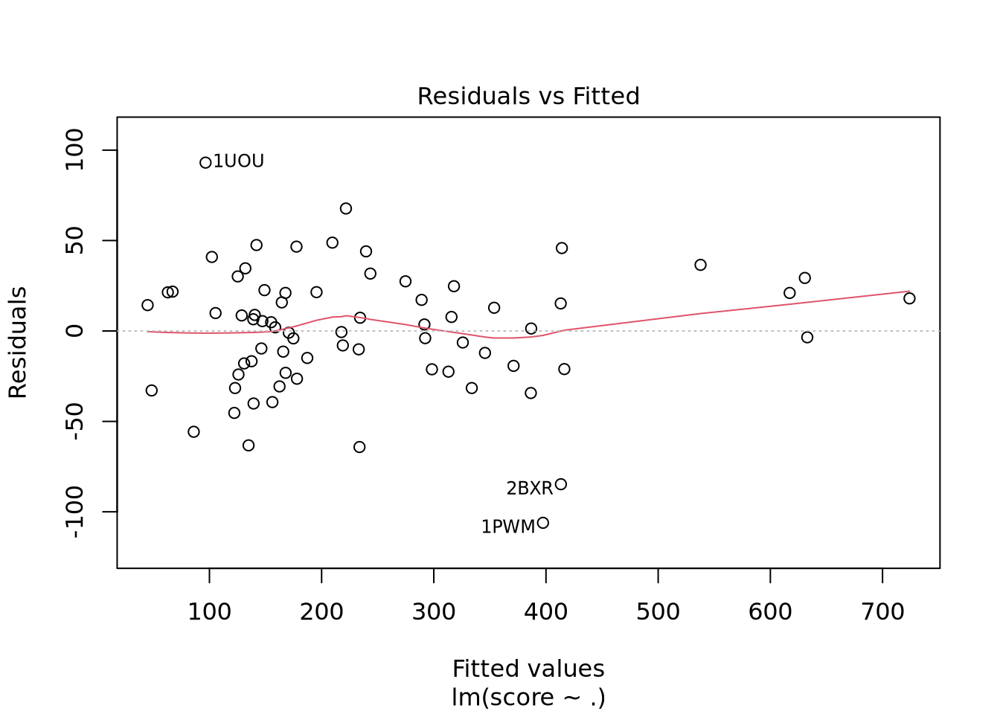
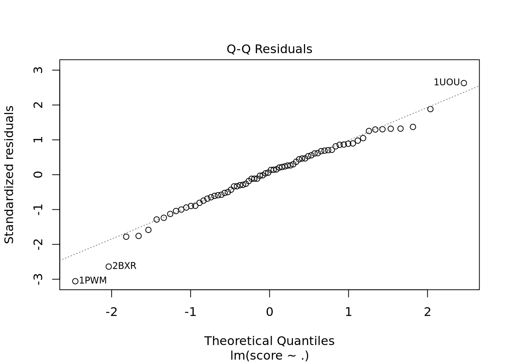
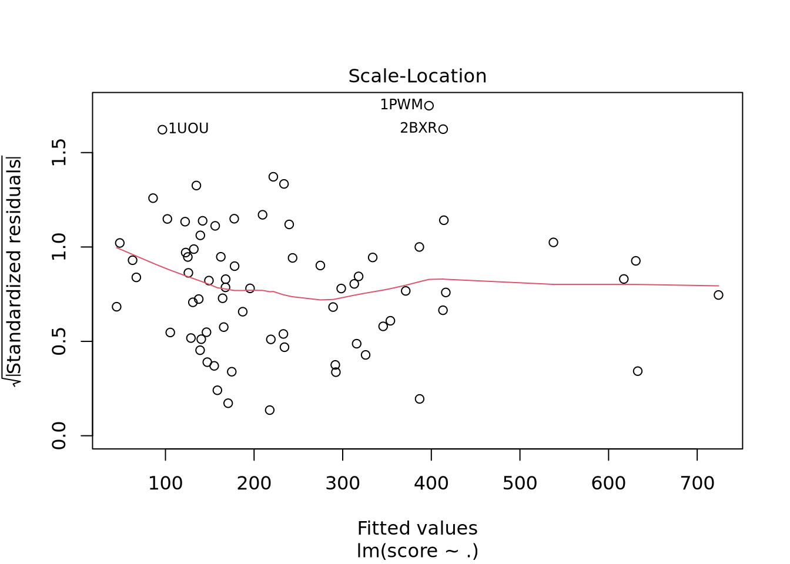
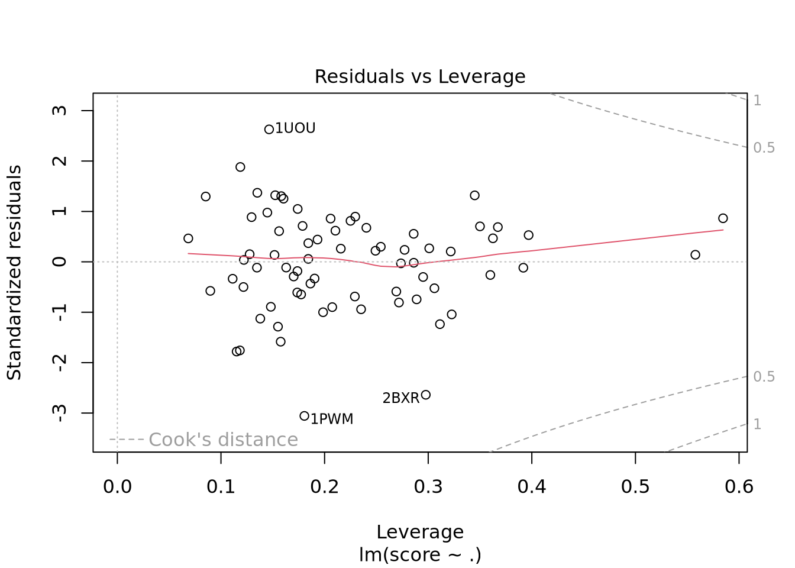
# plot(lm_score$fitted.values, dtf_new$score)Nous avons un modèle avec un R-carré ajusté à 0.9392 donc notre modèle est très performant. Il faut cependant avoir en tête que les données n’ont pas été normalisées. En effet, Real_volume prend toute la variabilité du fait de son ordre de grandeur bien supérieur aux autres descripteurs. Nous voyons aussi qu’il y a un descripteur avec des coefficients NA ce qui indique une corrélation ou une colinéarité avec un ou plusieurs autres descripteurs.
Calcul du modèle de régression linéaire multiple
Préparation du jeu de données
A l’aide d’un summary(), nous avons vu qu’il n’y avait pas de NA dans notre jeu de données. Nous devons enlever les valeurs manquantes car la régression effectuée requiert une matrice complète. D’autres méthodes par inférence existent afin de remplacer des valeurs manquantes mais par définition elles dénaturent la qualité des résultats. Pour ne pas prendre ne compte les valeurs manquantes, nous pouvons modifier le df en utilisant na.omit() ou nous pouvons effectuer la régression multiple sans prendre en compte les colonnes ou lignes contenant les valeurs manquantes.
Etude de l’autocorrélation
# Création de la matrice de corrélation
cor_x <- cor(X)
# Heatmap
heatmap(cor_x)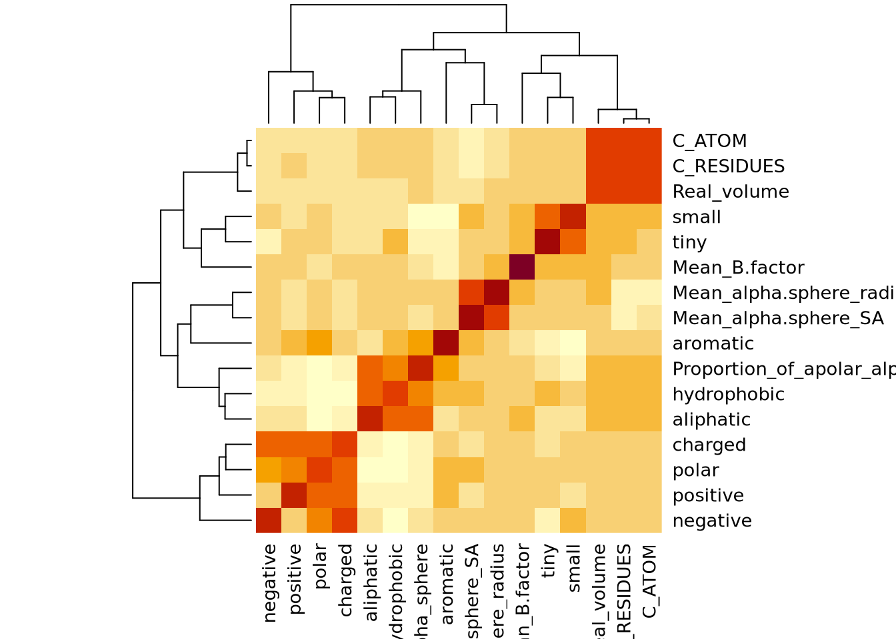
# Mise en évidence des descripteurs corrélés et colinéaires
findCorrelation(cor_x)[1] 11 13findLinearCombos(cor_x)$linearCombos
$linearCombos[[1]]
[1] 6 4 5
$remove
[1] 6colnames(X[, c(6, 11, 13)])[1] "positive" "C_RESIDUES" "Real_volume"Nous avons choisi un seuil de corrélation de 0,9 correspondant à la valeur par défaut car elle nous permet de retirer uniquement deux colonnes. Nous voulons garder un jeu de descripteurs large et varié. Cette fonction nous indique que les colonnes 6, 4, 5 sont colinéaires. Elle nous conseille de retirer la colonne 6.
Sélection des descripteurs pertinents
Nous réalisons une régression linéaire pour chaque descripteur en fonction du score.
clean_train_score <- train_score[, which(!colnames(train_score) %in% c("C_RESIDUES", "positive", "Real_volume"))]
p_values <- NULL
for (i in 1:(length(clean_train_score)-1)) {
lm_tmp <- lm(clean_train_score$score~clean_train_score[, i])
summary_model <- summary(lm_tmp)
p_value <- summary_model$coefficients[, "Pr(>|t|)"][2]
p_values <- c(p_values, p_value)
}
names(p_values) <- colnames(clean_train_score)[2:14]
val_desc <- names(p_values[which(p_values<0.2)])
dtf_final <- dtf_new[c("score", val_desc)]Etablissement du modèle
Réalisation du step
slm_original <- lm(score~., data = train_score)
slm_original_res <- slm_original$residuals
slm_stepped <- step(slm_original, direction = "both")Start: AIC=538.98
score ~ aromatic + polar + aliphatic + charged + negative + positive +
hydrophobic + small + tiny + C_ATOM + C_RESIDUES + Mean_alpha.sphere_radius +
Real_volume + Proportion_of_apolar_alpha_sphere + Mean_B.factor +
Mean_alpha.sphere_SA
Step: AIC=538.98
score ~ aromatic + polar + aliphatic + charged + negative + hydrophobic +
small + tiny + C_ATOM + C_RESIDUES + Mean_alpha.sphere_radius +
Real_volume + Proportion_of_apolar_alpha_sphere + Mean_B.factor +
Mean_alpha.sphere_SA
Df Sum of Sq RSS AIC
- aromatic 1 11 82303 536.99
- negative 1 32 82324 537.01
- polar 1 43 82335 537.02
- C_RESIDUES 1 330 82622 537.27
- small 1 398 82690 537.33
- Proportion_of_apolar_alpha_sphere 1 658 82950 537.55
- charged 1 770 83062 537.65
- C_ATOM 1 819 83111 537.69
- tiny 1 1588 83880 538.35
- Mean_alpha.sphere_SA 1 2020 84312 538.72
<none> 82292 538.98
- aliphatic 1 2690 84982 539.29
- hydrophobic 1 3524 85816 540.00
- Mean_B.factor 1 4862 87153 541.11
- Mean_alpha.sphere_radius 1 5743 88035 541.84
- Real_volume 1 82760 165052 587.09
Step: AIC=536.99
score ~ polar + aliphatic + charged + negative + hydrophobic +
small + tiny + C_ATOM + C_RESIDUES + Mean_alpha.sphere_radius +
Real_volume + Proportion_of_apolar_alpha_sphere + Mean_B.factor +
Mean_alpha.sphere_SA
Df Sum of Sq RSS AIC
- negative 1 28 82332 535.01
- polar 1 72 82375 535.05
- C_RESIDUES 1 335 82638 535.28
- small 1 524 82827 535.44
- Proportion_of_apolar_alpha_sphere 1 649 82952 535.55
- C_ATOM 1 810 83113 535.69
- charged 1 897 83200 535.77
- tiny 1 1677 83980 536.44
- Mean_alpha.sphere_SA 1 2021 84324 536.73
<none> 82303 536.99
- aliphatic 1 3358 85661 537.87
- hydrophobic 1 4610 86913 538.91
+ aromatic 1 11 82292 538.98
- Mean_B.factor 1 5214 87517 539.41
- Mean_alpha.sphere_radius 1 5940 88243 540.00
- Real_volume 1 84993 167296 586.06
Step: AIC=535.01
score ~ polar + aliphatic + charged + hydrophobic + small + tiny +
C_ATOM + C_RESIDUES + Mean_alpha.sphere_radius + Real_volume +
Proportion_of_apolar_alpha_sphere + Mean_B.factor + Mean_alpha.sphere_SA
Df Sum of Sq RSS AIC
- polar 1 129 82461 533.13
- C_RESIDUES 1 311 82643 533.28
- C_ATOM 1 788 83119 533.70
- Proportion_of_apolar_alpha_sphere 1 841 83173 533.74
- small 1 948 83279 533.84
- Mean_alpha.sphere_SA 1 1996 84327 534.74
- tiny 1 2244 84575 534.95
<none> 82332 535.01
- charged 1 2374 84706 535.06
- aliphatic 1 3585 85917 536.08
+ negative 1 28 82303 536.99
+ positive 1 28 82303 536.99
+ aromatic 1 7 82324 537.01
- hydrophobic 1 4927 87258 537.20
- Mean_B.factor 1 5195 87527 537.42
- Mean_alpha.sphere_radius 1 6125 88456 538.18
- Real_volume 1 94755 177086 588.16
Step: AIC=533.13
score ~ aliphatic + charged + hydrophobic + small + tiny + C_ATOM +
C_RESIDUES + Mean_alpha.sphere_radius + Real_volume + Proportion_of_apolar_alpha_sphere +
Mean_B.factor + Mean_alpha.sphere_SA
Df Sum of Sq RSS AIC
- C_RESIDUES 1 311 82772 531.40
- C_ATOM 1 755 83216 531.78
- Proportion_of_apolar_alpha_sphere 1 899 83360 531.91
- small 1 1103 83564 532.08
- Mean_alpha.sphere_SA 1 1949 84410 532.81
- tiny 1 2236 84697 533.05
- charged 1 2322 84783 533.13
<none> 82461 533.13
- aliphatic 1 3682 86143 534.27
+ polar 1 129 82332 535.01
+ negative 1 86 82375 535.05
+ positive 1 86 82375 535.05
+ aromatic 1 45 82416 535.09
- Mean_B.factor 1 5181 87642 535.51
- Mean_alpha.sphere_radius 1 6005 88466 536.19
- hydrophobic 1 6063 88524 536.23
- Real_volume 1 97115 179576 587.16
Step: AIC=531.4
score ~ aliphatic + charged + hydrophobic + small + tiny + C_ATOM +
Mean_alpha.sphere_radius + Real_volume + Proportion_of_apolar_alpha_sphere +
Mean_B.factor + Mean_alpha.sphere_SA
Df Sum of Sq RSS AIC
- C_ATOM 1 524 83296 529.85
- Proportion_of_apolar_alpha_sphere 1 688 83460 529.99
- small 1 1229 84002 530.46
- Mean_alpha.sphere_SA 1 1638 84410 530.81
- tiny 1 1998 84771 531.11
- charged 1 2293 85065 531.36
<none> 82772 531.40
- aliphatic 1 3412 86185 532.31
+ C_RESIDUES 1 311 82461 533.13
+ polar 1 130 82643 533.28
+ aromatic 1 57 82716 533.35
+ negative 1 41 82732 533.36
+ positive 1 41 82732 533.36
- Mean_B.factor 1 4869 87642 533.51
- Mean_alpha.sphere_radius 1 5699 88472 534.19
- hydrophobic 1 5990 88762 534.43
- Real_volume 1 96959 179731 585.22
Step: AIC=529.85
score ~ aliphatic + charged + hydrophobic + small + tiny + Mean_alpha.sphere_radius +
Real_volume + Proportion_of_apolar_alpha_sphere + Mean_B.factor +
Mean_alpha.sphere_SA
Df Sum of Sq RSS AIC
- Proportion_of_apolar_alpha_sphere 1 790 84086 528.53
- Mean_alpha.sphere_SA 1 1452 84748 529.10
- small 1 1627 84923 529.24
- tiny 1 2238 85534 529.76
<none> 83296 529.85
- charged 1 2497 85794 529.98
- aliphatic 1 3637 86933 530.93
+ C_ATOM 1 524 82772 531.40
+ polar 1 82 83214 531.78
+ C_RESIDUES 1 81 83216 531.78
+ aromatic 1 12 83284 531.84
+ negative 1 0 83296 531.85
+ positive 1 0 83296 531.85
- Mean_B.factor 1 5075 88371 532.11
- hydrophobic 1 6002 89298 532.86
- Mean_alpha.sphere_radius 1 6597 89893 533.34
- Real_volume 1 1335762 1419058 732.00
Step: AIC=528.53
score ~ aliphatic + charged + hydrophobic + small + tiny + Mean_alpha.sphere_radius +
Real_volume + Mean_B.factor + Mean_alpha.sphere_SA
Df Sum of Sq RSS AIC
- small 1 960 85046 527.35
- Mean_alpha.sphere_SA 1 1081 85167 527.45
- charged 1 1867 85953 528.11
- tiny 1 2110 86196 528.32
<none> 84086 528.53
- aliphatic 1 2877 86963 528.95
+ Proportion_of_apolar_alpha_sphere 1 790 83296 529.85
+ C_ATOM 1 626 83460 529.99
- Mean_B.factor 1 4428 88514 530.23
+ C_RESIDUES 1 220 83866 530.34
+ polar 1 122 83964 530.43
+ negative 1 108 83978 530.44
+ positive 1 108 83978 530.44
+ aromatic 1 0 84086 530.53
- hydrophobic 1 5820 89906 531.35
- Mean_alpha.sphere_radius 1 6384 90470 531.80
- Real_volume 1 1355876 1439962 731.05
Step: AIC=527.35
score ~ aliphatic + charged + hydrophobic + tiny + Mean_alpha.sphere_radius +
Real_volume + Mean_B.factor + Mean_alpha.sphere_SA
Df Sum of Sq RSS AIC
- tiny 1 1164 86211 526.33
- Mean_alpha.sphere_SA 1 1347 86394 526.48
- charged 1 1463 86509 526.58
<none> 85046 527.35
- aliphatic 1 2694 87740 527.59
+ small 1 960 84086 528.53
+ C_ATOM 1 912 84134 528.57
+ negative 1 485 84561 528.94
+ positive 1 485 84561 528.94
+ polar 1 231 84815 529.15
+ C_RESIDUES 1 231 84816 529.15
+ aromatic 1 220 84826 529.16
- Mean_B.factor 1 4672 89718 529.20
+ Proportion_of_apolar_alpha_sphere 1 124 84923 529.24
- hydrophobic 1 4865 89912 529.35
- Mean_alpha.sphere_radius 1 6723 91769 530.83
- Real_volume 1 1387743 1472790 730.67
Step: AIC=526.33
score ~ aliphatic + charged + hydrophobic + Mean_alpha.sphere_radius +
Real_volume + Mean_B.factor + Mean_alpha.sphere_SA
Df Sum of Sq RSS AIC
- aliphatic 1 1677 87887 525.71
- Mean_alpha.sphere_SA 1 1929 88140 525.92
<none> 86211 526.33
- charged 1 3014 89224 526.80
+ tiny 1 1164 85046 527.35
+ C_ATOM 1 880 85330 527.59
- hydrophobic 1 4172 90383 527.73
+ negative 1 659 85551 527.77
+ positive 1 659 85551 527.77
+ C_RESIDUES 1 493 85718 527.91
+ Proportion_of_apolar_alpha_sphere 1 405 85805 527.99
- Mean_B.factor 1 4582 90792 528.06
+ polar 1 113 86098 528.23
+ aromatic 1 105 86106 528.24
+ small 1 15 86196 528.32
- Mean_alpha.sphere_radius 1 7003 93214 529.95
- Real_volume 1 1405963 1492173 729.61
Step: AIC=525.71
score ~ charged + hydrophobic + Mean_alpha.sphere_radius + Real_volume +
Mean_B.factor + Mean_alpha.sphere_SA
Df Sum of Sq RSS AIC
<none> 87887 525.71
- Mean_alpha.sphere_SA 1 2636 90524 525.84
- hydrophobic 1 2700 90587 525.89
+ aliphatic 1 1677 86211 526.33
- charged 1 3582 91469 526.59
+ C_ATOM 1 1003 86885 526.89
- Mean_B.factor 1 4176 92063 527.06
+ aromatic 1 521 87367 527.29
+ C_RESIDUES 1 473 87415 527.33
+ negative 1 273 87614 527.49
+ positive 1 273 87614 527.49
+ small 1 189 87698 527.56
+ tiny 1 148 87740 527.59
+ polar 1 103 87785 527.63
+ Proportion_of_apolar_alpha_sphere 1 0 87887 527.71
- Mean_alpha.sphere_radius 1 7422 95310 529.55
- Real_volume 1 1404611 1492498 727.63summary(slm_stepped)
Call:
lm(formula = score ~ charged + hydrophobic + Mean_alpha.sphere_radius +
Real_volume + Mean_B.factor + Mean_alpha.sphere_SA, data = train_score)
Residuals:
Min 1Q Median 3Q Max
-118.179 -21.801 6.118 25.229 96.618
Coefficients:
Estimate Std. Error t value Pr(>|t|)
(Intercept) -3.742e+01 8.277e+01 -0.452 0.6527
charged -8.619e+01 5.296e+01 -1.628 0.1085
hydrophobic -6.769e+01 4.790e+01 -1.413 0.1624
Mean_alpha.sphere_radius 5.674e+01 2.422e+01 2.343 0.0222 *
Real_volume 2.067e-01 6.413e-03 32.231 <2e-16 ***
Mean_B.factor -6.366e+01 3.623e+01 -1.757 0.0836 .
Mean_alpha.sphere_SA -2.241e+02 1.605e+02 -1.396 0.1674
---
Signif. codes: 0 '***' 0.001 '**' 0.01 '*' 0.05 '.' 0.1 ' ' 1
Residual standard error: 36.77 on 65 degrees of freedom
Multiple R-squared: 0.945, Adjusted R-squared: 0.9399
F-statistic: 186.1 on 6 and 65 DF, p-value: < 2.2e-16hist(slm_original_res, breaks = 10)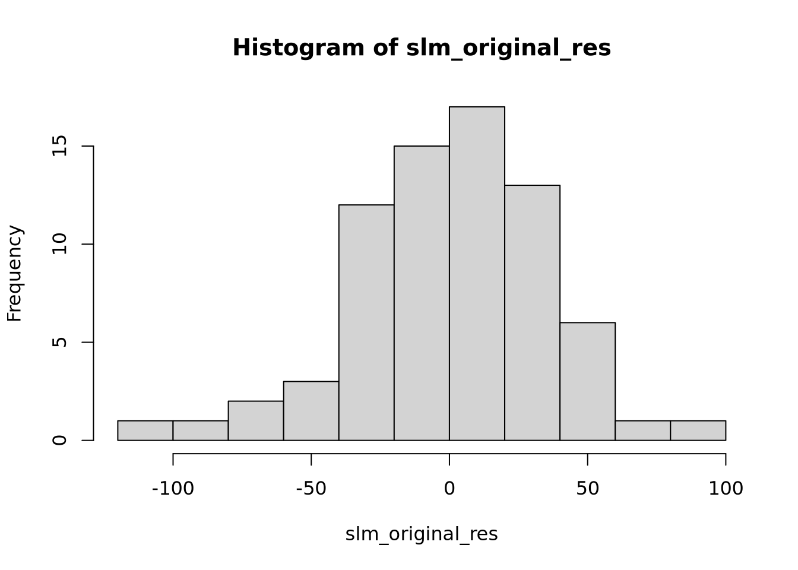
plot(slm_stepped)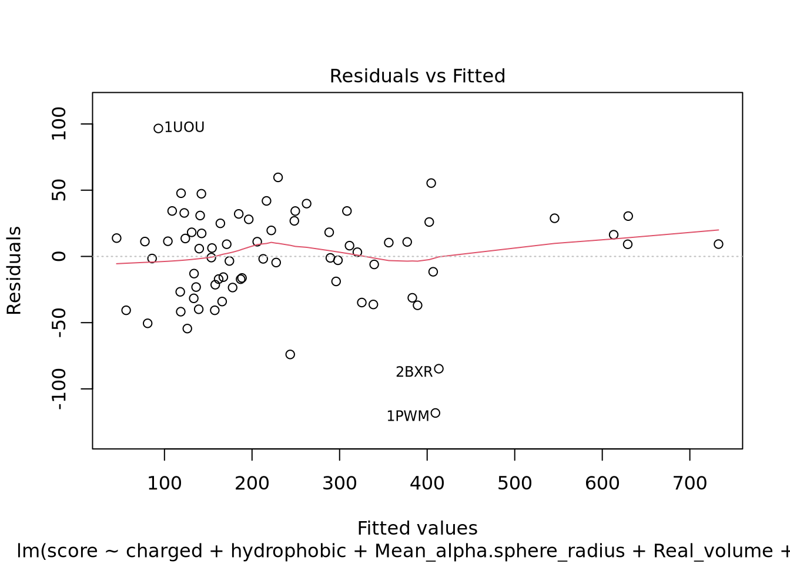
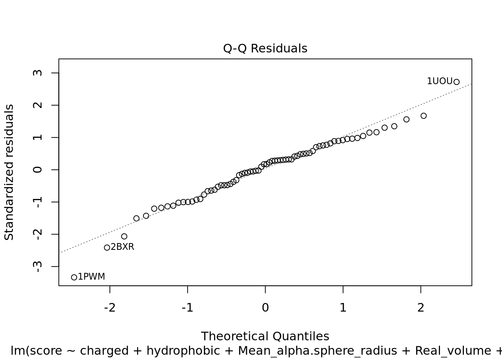
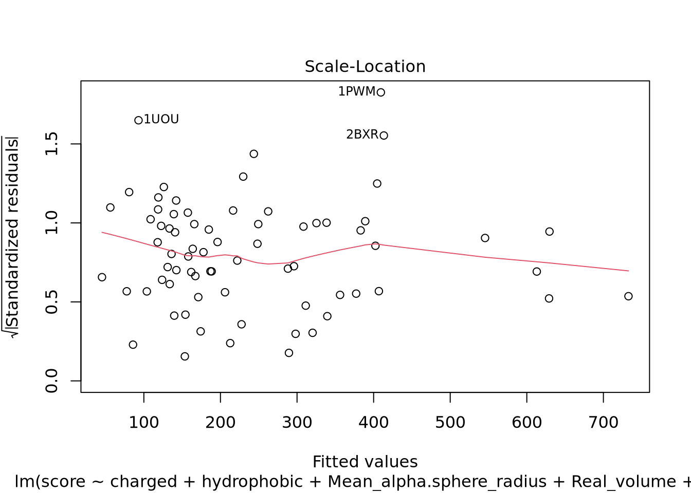
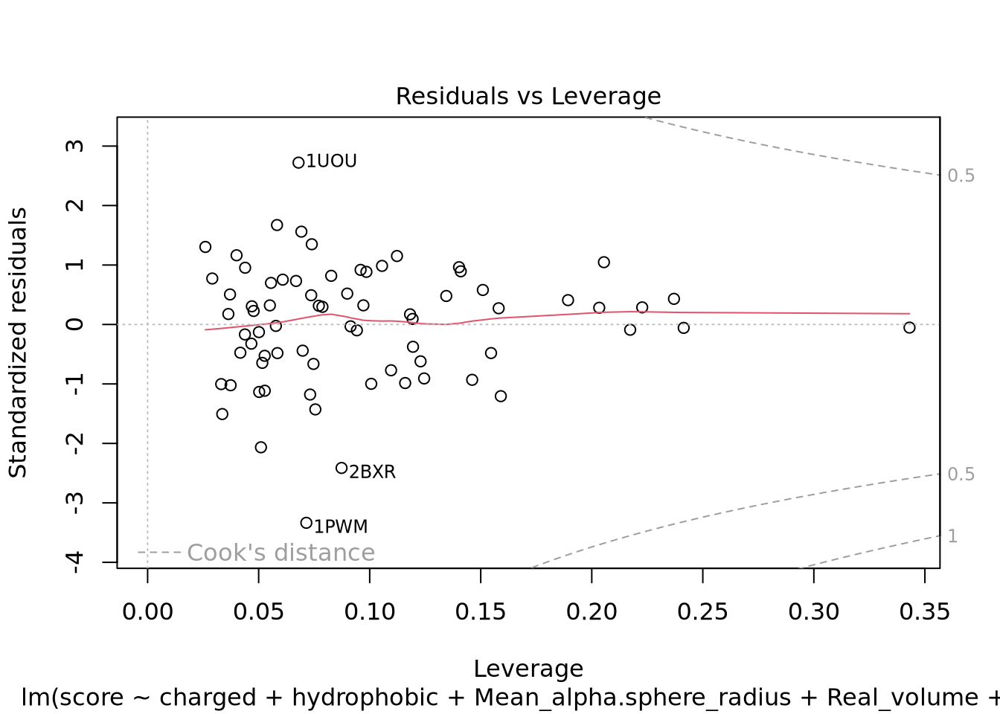
Nous pouvons voir deux lignes horizontales à -100 et 100 ce qui signifie que les variances sont égales et on est dans le cas d’homoscédasticité
spred_train <- predict.lm(slm_original, newdata = train.dtf)Warning in predict.lm(slm_original, newdata = train.dtf): prediction from
rank-deficient fit; attr(*, "non-estim") has doubtful casesspred_test <- predict.lm(slm_original, newdata = test.dtf)Warning in predict.lm(slm_original, newdata = test.dtf): prediction from
rank-deficient fit; attr(*, "non-estim") has doubtful casesplot(spred_train, train.dtf$score)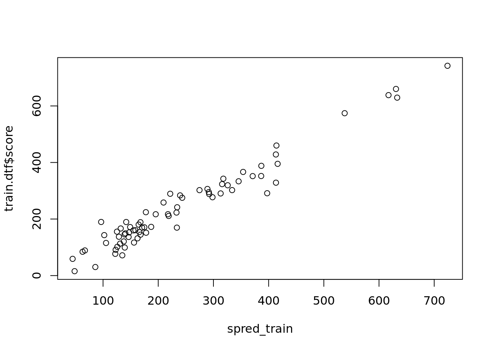
plot(spred_test, test.dtf$score)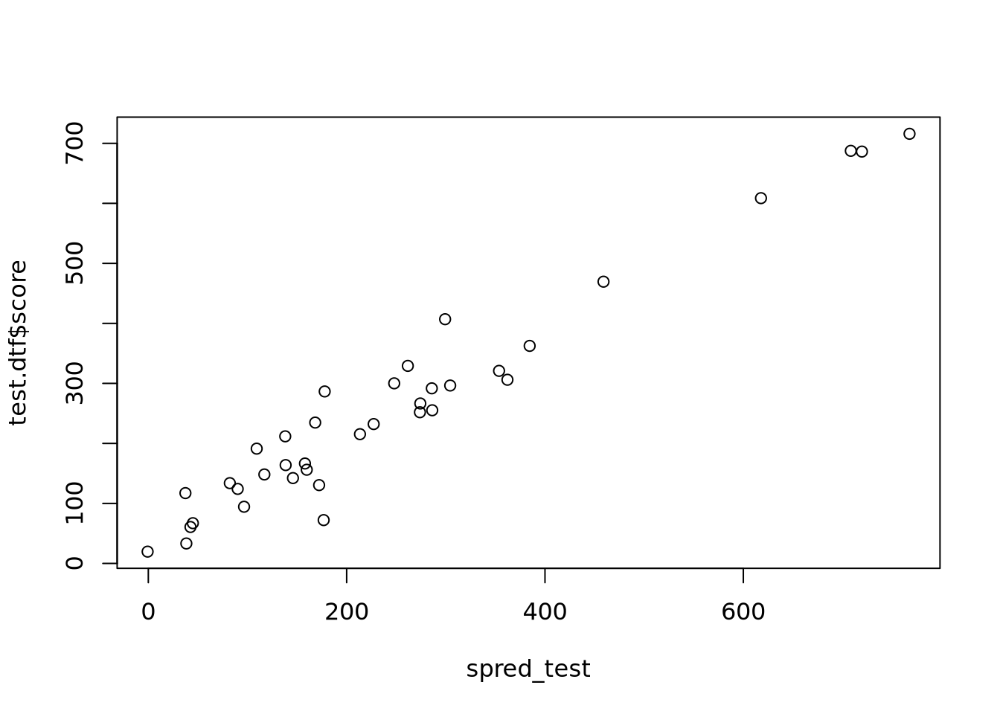
sperf_train_lm <- postResample(spred_train, train.dtf$score)
sperf_test_lm <- postResample(spred_test, test.dtf$score)
sperf_train_lm RMSE Rsquared MAE
33.8074404 0.9484854 26.0540532 sperf_test_lm RMSE Rsquared MAE
47.6112194 0.9435464 35.8992548 Regression logistique multiple
train_drugg <- train.dtf[, -which(colnames(train.dtf)=="score")]
train_drugg$drugg <- as.factor(train_drugg$drugg)
glm_original <- glm(drugg~., data = train_drugg, family = "binomial", maxit = 1000)
glm_stepped <- step(glm_original, direction = "both")Start: AIC=64.9
drugg ~ aromatic + polar + aliphatic + charged + negative + positive +
hydrophobic + small + tiny + C_ATOM + C_RESIDUES + Mean_alpha.sphere_radius +
Real_volume + Proportion_of_apolar_alpha_sphere + Mean_B.factor +
Mean_alpha.sphere_SA
Step: AIC=64.9
drugg ~ aromatic + polar + aliphatic + charged + negative + hydrophobic +
small + tiny + C_ATOM + C_RESIDUES + Mean_alpha.sphere_radius +
Real_volume + Proportion_of_apolar_alpha_sphere + Mean_B.factor +
Mean_alpha.sphere_SA
Df Deviance AIC
- Mean_alpha.sphere_SA 1 32.896 62.896
- negative 1 32.898 62.898
- C_RESIDUES 1 32.904 62.904
- tiny 1 33.079 63.079
- C_ATOM 1 33.400 63.400
- Mean_alpha.sphere_radius 1 33.413 63.413
- small 1 33.452 63.452
- aromatic 1 33.565 63.565
- polar 1 34.054 64.054
- charged 1 34.702 64.702
- Real_volume 1 34.862 64.862
<none> 32.896 64.896
- Proportion_of_apolar_alpha_sphere 1 36.164 66.164
- hydrophobic 1 36.389 66.389
- Mean_B.factor 1 37.928 67.928
- aliphatic 1 38.023 68.023
Step: AIC=62.9
drugg ~ aromatic + polar + aliphatic + charged + negative + hydrophobic +
small + tiny + C_ATOM + C_RESIDUES + Mean_alpha.sphere_radius +
Real_volume + Proportion_of_apolar_alpha_sphere + Mean_B.factor
Df Deviance AIC
- negative 1 32.899 60.899
- C_RESIDUES 1 32.905 60.905
- tiny 1 33.079 61.079
- small 1 33.507 61.507
- aromatic 1 33.591 61.591
- C_ATOM 1 33.597 61.597
- Mean_alpha.sphere_radius 1 33.738 61.738
- polar 1 34.200 62.200
- charged 1 34.820 62.820
<none> 32.896 62.896
- Real_volume 1 35.005 63.005
- Proportion_of_apolar_alpha_sphere 1 36.166 64.166
- hydrophobic 1 36.448 64.448
+ Mean_alpha.sphere_SA 1 32.896 64.896
- Mean_B.factor 1 38.013 66.013
- aliphatic 1 38.344 66.344
Step: AIC=60.9
drugg ~ aromatic + polar + aliphatic + charged + hydrophobic +
small + tiny + C_ATOM + C_RESIDUES + Mean_alpha.sphere_radius +
Real_volume + Proportion_of_apolar_alpha_sphere + Mean_B.factor
Df Deviance AIC
- C_RESIDUES 1 32.910 58.910
- tiny 1 33.098 59.098
- aromatic 1 33.598 59.598
- C_ATOM 1 33.689 59.689
- Mean_alpha.sphere_radius 1 33.810 59.810
- small 1 33.858 59.858
- polar 1 34.425 60.425
<none> 32.899 60.899
- Real_volume 1 35.174 61.174
- charged 1 36.373 62.373
- Proportion_of_apolar_alpha_sphere 1 36.452 62.452
- hydrophobic 1 36.722 62.722
+ negative 1 32.896 62.896
+ positive 1 32.896 62.896
+ Mean_alpha.sphere_SA 1 32.898 62.898
- Mean_B.factor 1 38.030 64.030
- aliphatic 1 38.370 64.370
Step: AIC=58.91
drugg ~ aromatic + polar + aliphatic + charged + hydrophobic +
small + tiny + C_ATOM + Mean_alpha.sphere_radius + Real_volume +
Proportion_of_apolar_alpha_sphere + Mean_B.factor
Df Deviance AIC
- tiny 1 33.100 57.100
- aromatic 1 33.598 57.598
- Mean_alpha.sphere_radius 1 33.817 57.817
- small 1 33.859 57.859
- polar 1 34.441 58.441
- C_ATOM 1 34.460 58.460
<none> 32.910 58.910
- Real_volume 1 35.191 59.191
- charged 1 36.380 60.380
- Proportion_of_apolar_alpha_sphere 1 36.628 60.628
- hydrophobic 1 36.745 60.745
+ C_RESIDUES 1 32.899 60.899
+ positive 1 32.905 60.905
+ negative 1 32.905 60.905
+ Mean_alpha.sphere_SA 1 32.910 60.910
- Mean_B.factor 1 38.589 62.589
- aliphatic 1 39.150 63.150
Step: AIC=57.1
drugg ~ aromatic + polar + aliphatic + charged + hydrophobic +
small + C_ATOM + Mean_alpha.sphere_radius + Real_volume +
Proportion_of_apolar_alpha_sphere + Mean_B.factor
Df Deviance AIC
- aromatic 1 33.608 55.608
- Mean_alpha.sphere_radius 1 33.868 55.868
- small 1 34.530 56.530
- C_ATOM 1 34.567 56.567
- polar 1 34.656 56.656
<none> 33.100 57.100
- Real_volume 1 35.325 57.325
- charged 1 36.380 58.380
- Proportion_of_apolar_alpha_sphere 1 36.703 58.703
- hydrophobic 1 36.803 58.803
+ tiny 1 32.910 58.910
+ negative 1 33.079 59.079
+ positive 1 33.079 59.079
+ C_RESIDUES 1 33.098 59.098
+ Mean_alpha.sphere_SA 1 33.100 59.100
- Mean_B.factor 1 38.599 60.599
- aliphatic 1 44.497 66.497
Step: AIC=55.61
drugg ~ polar + aliphatic + charged + hydrophobic + small + C_ATOM +
Mean_alpha.sphere_radius + Real_volume + Proportion_of_apolar_alpha_sphere +
Mean_B.factor
Df Deviance AIC
- Mean_alpha.sphere_radius 1 34.054 54.054
- small 1 34.553 54.553
- polar 1 34.659 54.659
- C_ATOM 1 34.851 54.851
- Real_volume 1 35.590 55.590
<none> 33.608 55.608
- charged 1 36.588 56.588
- Proportion_of_apolar_alpha_sphere 1 36.818 56.818
- hydrophobic 1 36.839 56.839
+ aromatic 1 33.100 57.100
+ Mean_alpha.sphere_SA 1 33.585 57.585
+ tiny 1 33.598 57.598
+ C_RESIDUES 1 33.606 57.606
+ positive 1 33.608 57.608
+ negative 1 33.608 57.608
- Mean_B.factor 1 38.671 58.671
- aliphatic 1 45.487 65.487
Step: AIC=54.05
drugg ~ polar + aliphatic + charged + hydrophobic + small + C_ATOM +
Real_volume + Proportion_of_apolar_alpha_sphere + Mean_B.factor
Df Deviance AIC
- small 1 34.621 52.621
- polar 1 35.115 53.115
- C_ATOM 1 35.132 53.132
<none> 34.054 54.054
- Real_volume 1 36.672 54.672
- charged 1 36.694 54.694
- hydrophobic 1 37.146 55.146
+ Mean_alpha.sphere_radius 1 33.608 55.608
- Proportion_of_apolar_alpha_sphere 1 37.756 55.756
+ aromatic 1 33.868 55.868
+ Mean_alpha.sphere_SA 1 33.965 55.965
+ negative 1 34.027 56.027
+ positive 1 34.027 56.027
+ tiny 1 34.051 56.051
+ C_RESIDUES 1 34.053 56.053
- Mean_B.factor 1 38.683 56.683
- aliphatic 1 45.538 63.538
Step: AIC=52.62
drugg ~ polar + aliphatic + charged + hydrophobic + C_ATOM +
Real_volume + Proportion_of_apolar_alpha_sphere + Mean_B.factor
Df Deviance AIC
- C_ATOM 1 36.158 52.158
- polar 1 36.395 52.395
<none> 34.621 52.621
- charged 1 36.694 52.694
- Real_volume 1 37.561 53.561
+ small 1 34.054 54.054
- hydrophobic 1 38.368 54.368
+ tiny 1 34.394 54.394
+ positive 1 34.505 54.505
+ negative 1 34.505 54.505
+ Mean_alpha.sphere_SA 1 34.544 54.544
+ Mean_alpha.sphere_radius 1 34.553 54.553
+ C_RESIDUES 1 34.593 54.593
+ aromatic 1 34.612 54.612
- Mean_B.factor 1 38.986 54.986
- Proportion_of_apolar_alpha_sphere 1 41.255 57.255
- aliphatic 1 46.672 62.672
Step: AIC=52.16
drugg ~ polar + aliphatic + charged + hydrophobic + Real_volume +
Proportion_of_apolar_alpha_sphere + Mean_B.factor
Df Deviance AIC
<none> 36.158 52.158
- Real_volume 1 38.317 52.317
+ C_ATOM 1 34.621 52.621
+ C_RESIDUES 1 34.713 52.713
- charged 1 38.804 52.804
- polar 1 38.863 52.863
+ small 1 35.132 53.132
+ Mean_alpha.sphere_radius 1 35.343 53.343
- Mean_B.factor 1 39.461 53.461
+ tiny 1 35.596 53.596
+ Mean_alpha.sphere_SA 1 35.879 53.879
+ aromatic 1 36.092 54.092
+ negative 1 36.103 54.103
+ positive 1 36.103 54.103
- hydrophobic 1 40.960 54.960
- Proportion_of_apolar_alpha_sphere 1 42.597 56.597
- aliphatic 1 48.568 62.568plot(glm_original$fitted.values, train_drugg$drugg)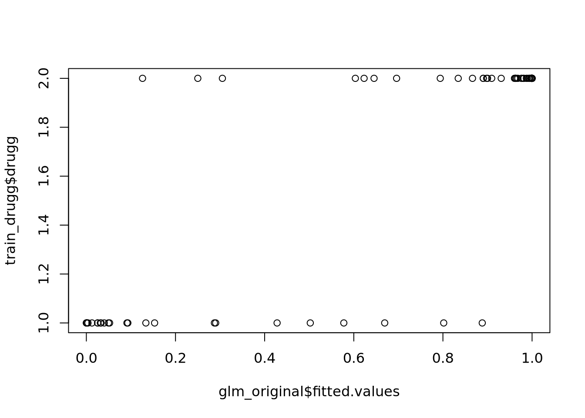
glm_ori_res <- glm_original$residuals
glm_stp_res <- glm_stepped$residuals
hist(glm_ori_res, breaks = 10)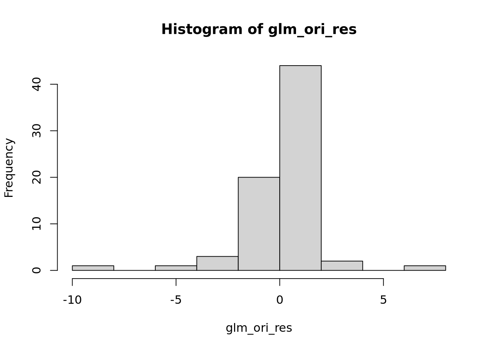
hist(glm_stp_res, breaks = 10)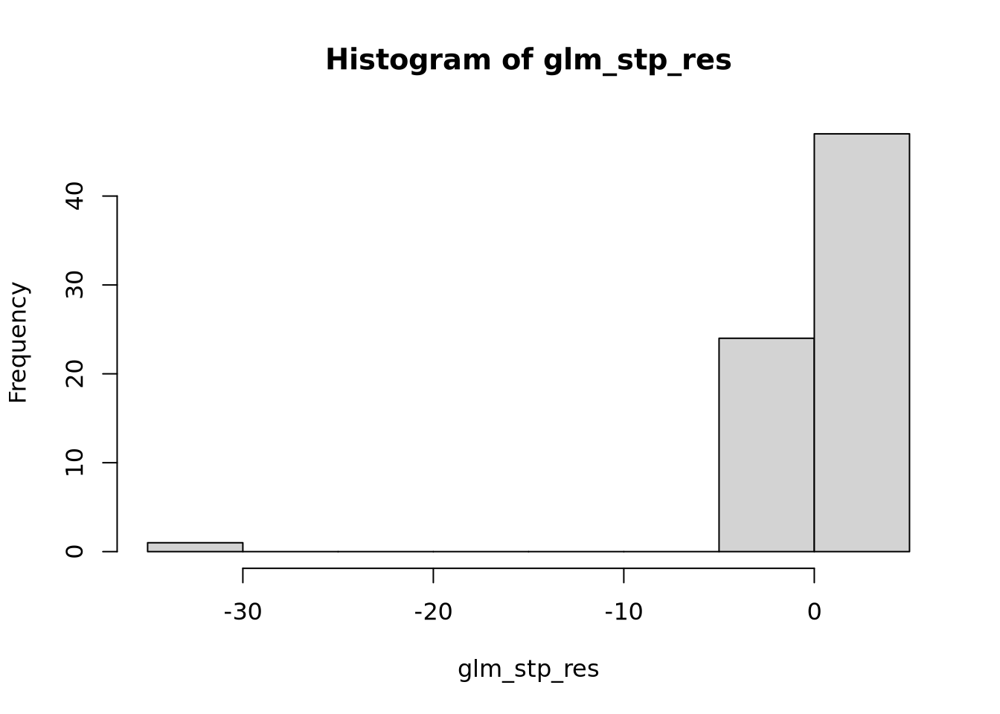
plot(glm_ori_res)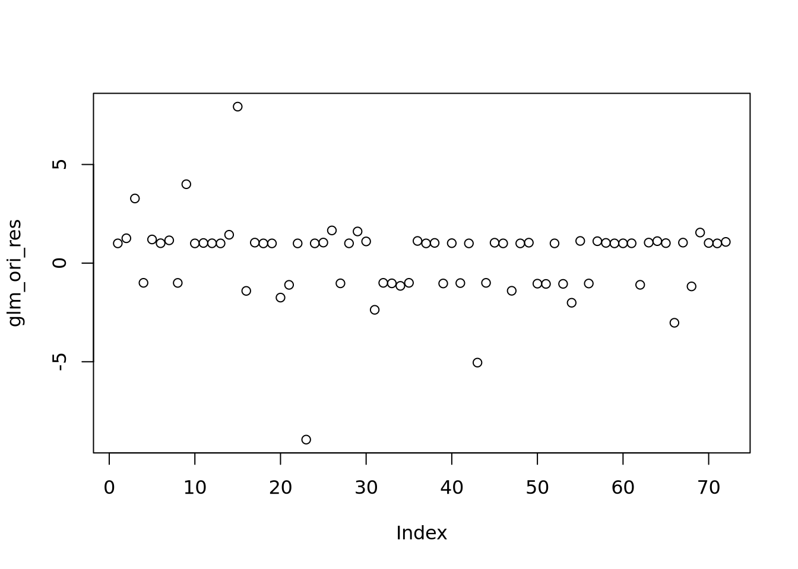
plot(glm_stp_res)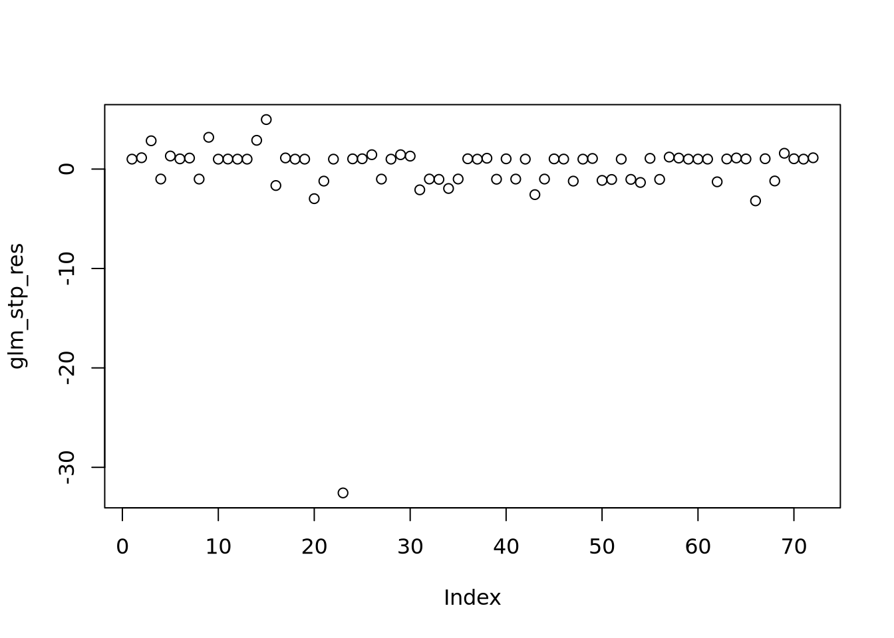
dtf_train_clean <- train.dtf[, which(!colnames(dtf_new) %in% c("C_RESIDUES", "positive", "Real_volume"))]
p_values <- NULL
for (i in 1:(length(clean_dtf)-1)) {
glm_tmp <- glm(dtf_train_clean$drugg~dtf_train_clean[, i], family = "binomial", maxit = 1000)
summary_model <- summary(glm_tmp)
p_value <- summary_model$coefficients[, "Pr(>|z|)"][2]
p_values <- c(p_values, p_value)
}
names(p_values) <- colnames(dtf_train_clean)[2:14]
val_desc <- names(p_values[which(p_values<0.05)])
dtf_train_final <- train_log[c("drugg", val_desc)]Nous pouvons voir deux lignes horizontales à -100 et 100 ce qui signifie que les variances sont égales et on est dans le cas d’homoscédasticité
dpred_train_logi <- predict.glm(glm_stepped, newdata = train.dtf, type = "response")
dpred_test_logi <- predict.glm(glm_stepped, newdata = test.dtf, type = "response")
dpred_train_logi_round <- as.factor(round(dpred_train_logi))
dpred_test_logi_round <- as.factor(round(dpred_test_logi))
plot(dpred_train_logi, train.dtf$drugg)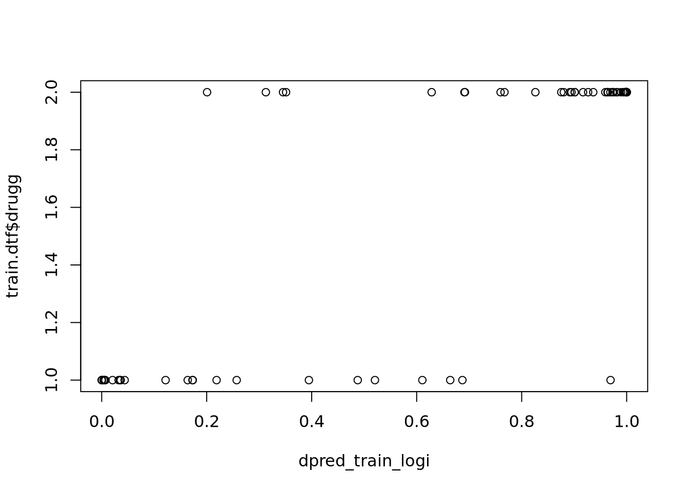
plot(dpred_test_logi, test.dtf$drugg)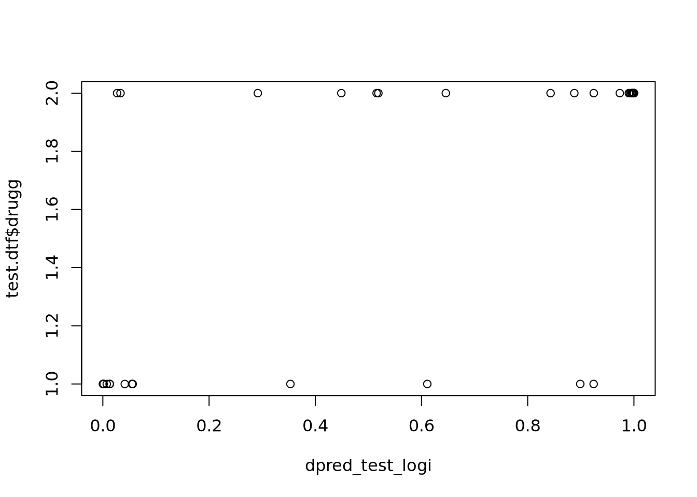
confusionMatrix(dpred_train_logi_round, train.dtf$drugg)Confusion Matrix and Statistics
Reference
Prediction 0 1
0 20 4
1 5 43
Accuracy : 0.875
95% CI : (0.7759, 0.9412)
No Information Rate : 0.6528
P-Value [Acc > NIR] : 1.79e-05
Kappa : 0.7216
Mcnemar's Test P-Value : 1
Sensitivity : 0.8000
Specificity : 0.9149
Pos Pred Value : 0.8333
Neg Pred Value : 0.8958
Prevalence : 0.3472
Detection Rate : 0.2778
Detection Prevalence : 0.3333
Balanced Accuracy : 0.8574
'Positive' Class : 0
confusionMatrix(dpred_test_logi_round, test.dtf$drugg)Confusion Matrix and Statistics
Reference
Prediction 0 1
0 11 4
1 3 19
Accuracy : 0.8108
95% CI : (0.6484, 0.9204)
No Information Rate : 0.6216
P-Value [Acc > NIR] : 0.01111
Kappa : 0.6034
Mcnemar's Test P-Value : 1.00000
Sensitivity : 0.7857
Specificity : 0.8261
Pos Pred Value : 0.7333
Neg Pred Value : 0.8636
Prevalence : 0.3784
Detection Rate : 0.2973
Detection Prevalence : 0.4054
Balanced Accuracy : 0.8059
'Positive' Class : 0
library(pROC)
roc_curve_test <- roc(test.dtf$drugg, pred_test_logi)
plot(roc_curve_test)
legend("bottomright", legend = paste("AUC = ", round(auc(roc_curve_test), 2)), col = "blue", lty = 1)
roc_curve_train <- roc(train.dtf$drugg, pred_train_logi)
plot(roc_curve_train)
legend("bottomright", legend = paste("AUC = ", round(auc(roc_curve_train), 2)), col = "blue", lty = 1)